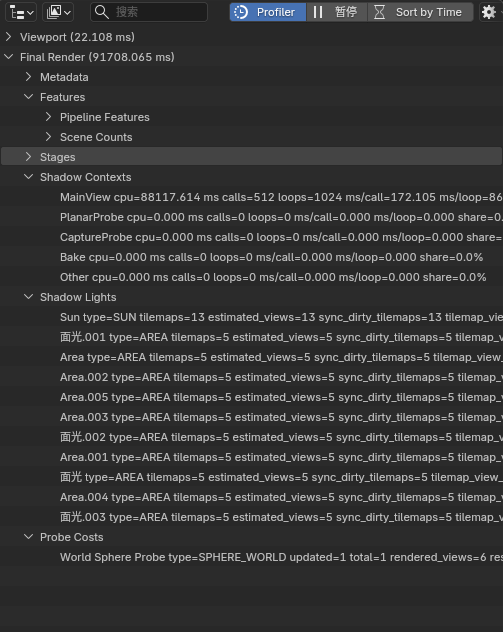
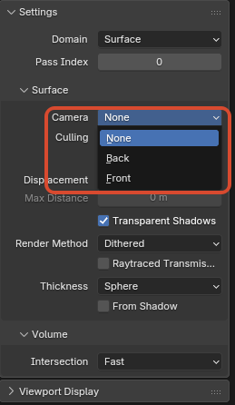
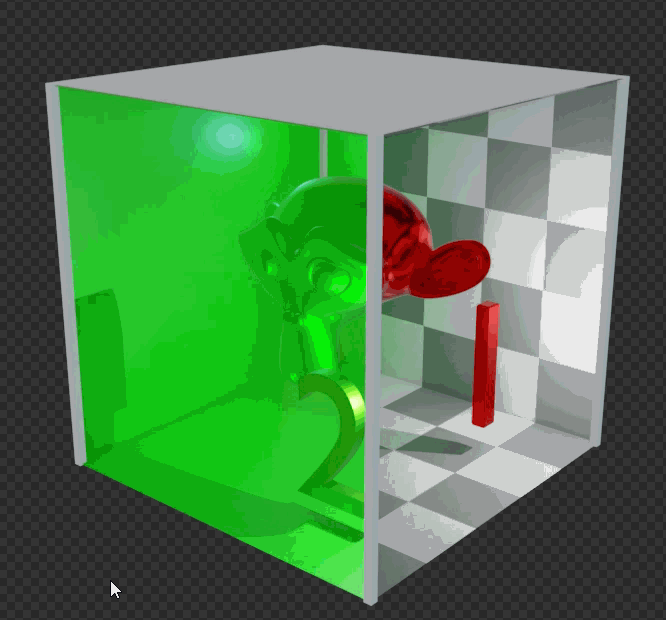
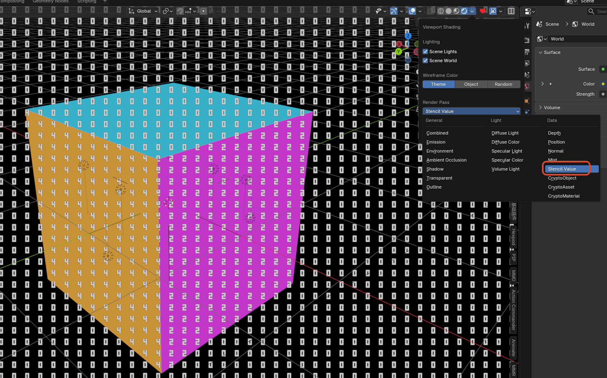

Interface and Workflow Additions¶
1. Eevee Performance¶
Purpose¶
Shows Eevee viewport / final-render performance statistics, stage breakdowns, and hints directly in the Outliner, making it easier to locate heavy parts of the pipeline.

Entry¶
Outliner > Display Mode > Eevee PerformanceProfiler/Pause/Sort by Timein theOutlinerheader- The
Eevee Performancepopover in theOutlinerheader
Behavior¶
- Enabling
Profilerstarts collecting performance statistics and displays them in theOutliner Pausefreezes live updates so the current result can be inspectedSort by Timesorts the stage list by CPU cost instead of fixed pipeline orderAverage Windowsets the frame window used for smoothing statistics- The tree currently includes groups such as
Viewport,Final Render,Metadata,Features,Stages,Shadow Contexts,Shadow Lights,Probe Costs, andHints
Shadow and Probe Attribution¶
Shadow Contextsbreaks shadow CPU cost down by render context, such asMainView,PlanarProbe,CaptureProbe,Bake, andOtherShadow Contextsshowscpu,calls,loops,ms/call,ms/loop, andshare, making it easier to tell whether shadow cost comes from the main view, probe updates, baking, or other pathsShadow Lightslists shadow tilemap load per light, includingtype,tilemaps,estimated_views,sync_dirty_tilemaps,tilemap_view_share, andlevelProbe Costslists per-probe update cost, includingupdated,total,rendered_views,resolution,estimated_work,work_share, andlevel- These groups are attribution aids, not a per-GPU-draw-call profiler; sorting and shares are meant for hotspot discovery, and exact values change with viewport state, sampling, and probe update frequency
Current Scope¶
- This is mainly a CPU-side Eevee stage profiler and hint view, not a full GPU profiler
- It is meaningful only for
Eevee, not forCycles
2. Material Selector Previews¶
Purpose¶
Controls whether material previews are rendered in material drop-downs and search lists.
This is mainly useful when many materials exist and expanding the selector would otherwise trigger too many preview renders.
Entry¶
Edit > Preferences > Editing > Objects > Materials > Material Selector Previews

Behavior¶
- When enabled: the selector shows material previews as usual
- When disabled: the selector falls back to normal material icons and no longer triggers preview renders in the drop-down list
- Default value: enabled
Current Scope¶
- When disabled, this prevents material selectors, material drop-down / search lists, and automatic material preview panels from starting new material preview renders
- Disabling the option also clears running material preview jobs so old preview renders do not keep occupying Eevee
- Does not affect the 3D Viewport
Material Preview/Renderedshading modes - Does not affect the actual material render result
3. Material Face Culling¶
Purpose¶
Adds clearer face-culling control for materials. In addition to the usual back-face culling, the NPR Port also supports Front culling.

Entry¶
Material Properties > Settings > Culling > Camera
Available Modes¶
None: render both front and back facesBack: hide back-facing facesFront: hide front-facing faces
Notes¶
Frontis useful for shell-style effects, inside-view setups, or some inverted-outline style tricksShadowandLight Probe Volumestill keep their own culling controls
4. Material Surface Render State¶
Purpose¶
Provides direct Eevee Surface material controls for depth test, color write, depth write, and stencil test / write state. These are useful for masks, portals, special outline layers, hidden writer materials, and other effects that need explicit render-state control.
Entry¶
Material Properties > Settings > Surface

ZTest, Stencil, Color Write, and Depth Write in Material Properties > Settings > Surface
ZTest¶
ZTest controls how a fragment compares against the stored depth:
LessGreaterLess EqualGreater EqualEqualNot EqualAlwaysNever
The default should usually stay Less Equal. ZTest Never rejects the whole fragment, including stencil writes. For stencil writer materials, usually keep Less Equal and disable Color Write / Depth Write when needed.
Color Write / Depth Write¶
Color Write: controls whether the Surface material writes Eevee color outputDepth Write: controls whether the Surface material writes Eevee depth output
These toggles control writes only; they do not disable node-tree evaluation. Transparent, outline, AOV, and stencil paths should still be interpreted through the current material and pipeline rules.
Stencil¶
The Stencil panel contains:
EnabledOrderReferenceRead MaskWrite MaskTestPassFailZFail
Test options: Always, Never, Equal, Not Equal, Less, Less Equal, Greater, Greater Equal.
Pass / Fail / ZFail options: Keep, Zero, Replace, Increment Clamp, Decrement Clamp, Invert, Increment Wrap, Decrement Wrap.
Notes¶
Ordercontrols submission order inside the Eevee stencil pass; lower values are submitted firstReference,Read Mask, andWrite Maskcurrently use a 4-bit user stencil range- A common writer setup enables
Stencil, usesPass = Replace, and disablesColor Write/Depth Write - A common reader setup enables
Stencil, usesTest = EqualorNot Equal, and matches the sameReference/ mask combination - If one material both participates in depth occlusion and writes stencil, check the
ZTestandDepth Writecombination carefully so fragments are not rejected before stencil writes happen - To inspect the stencil buffer in the viewport, choose
Stencil ValuefromViewport Shading > Render Pass

Stencil writer and reader mask example

Previewing stencil values with Viewport Shading > Stencil Value
5. Eevee Lightgroup ID¶
Purpose¶
Assigns an integer light-group ID to Eevee lights so the Shader Info node and GLSL Function GLSLLight.lightgroup_id can filter direct-light evaluation by group.
Entry¶
Light Data > Light > Lightgroup ID
Behavior¶
- Default value:
0 - When
Shader Infoalso usesLightgroup = 0, only lights withLightgroup ID = 0are evaluated - If a
Shader Infonode uses another integer value, only lights with the same ID are included - In
GLSL Function,glsl_light_get(i).lightgroup_idreturns this integer and can be used for custom per-light include / exclude logic - This grouping does not automatically modify the default Eevee material lighting path; it only affects
Shader Infoor customGLSL Functionlogic that explicitly uses it
6. Sun Shadow Map Scale¶
Purpose¶
Adds a separate coverage-scale control for Eevee Sun shadow maps, making it possible to adjust the coverage range and effective detail distribution of the Sun clipmap shadow.
Entry¶
Light Data > Shadow > Shadow Map Scale
This option is shown only for Sun lights.

Shadow Map Scale setting on a Sun light
Behavior¶
- Default value:
1 - Higher values expand the Sun shadow-map coverage scale and usually reduce effective detail per area
- Lower values concentrate the shadow map into a smaller range and can improve nearby detail, but can expose insufficient coverage or boundary issues more easily
- This setting affects only Eevee Sun shadow-map sampling / coverage behavior; it does not change light color, energy, direction, or material-side shading
7. Splash Version Tag¶
Purpose¶
Appends the current NPR build tag and build date to the version text in the top-right corner of the splash screen, so custom builds are easier to distinguish at a glance.
Current Format¶
version + npr post + build date- Example:
5.2.0 npr post 2026-07-16
8. Pose Bone Outliner Visibility¶
Purpose¶
Adds a dedicated Outliner visibility flag to each Pose Bone, making it easier to organize complex rigs without changing rig behavior itself.
Entry¶
Bone Properties > Viewport Display > Hide in OutlinerOutliner > Filter > Hidden PoseBones
Behavior¶
- Every
Pose Bonehas its ownHide in Outlinertoggle - The toggle is enabled by default
- The
Hidden PoseBonesfilter in theOutlineris also enabled by default, so existing rigs do not immediately change appearance - After disabling
Outliner > Filter > Hidden PoseBones, bones withHide in Outlinerenabled are hidden from the tree - If a hidden parent still has visible child bones, those visible children remain in the tree instead of removing the whole hierarchy
Current Scope¶
- Affects
Pose Boneonly - Does not affect
Edit Bone - Changes only the Outliner hierarchy display, not transforms, animation, drivers, or rendering